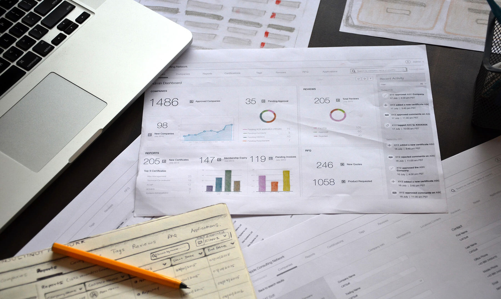

The consultant network vision is to brand every individual consultant or company to provide service under their roof. An opportunity to serve the customers across geographic locations. So they wanted the admins to be provided with the tools to monitor, analyze and assess feedbacks of customers at regular intervals after service of their registered consultants. Seek more processed orientation to convert the new applicants via their existing application portal into an authorized consultant.

Individual Consultants or group of companies enrollments had a rise in recent years. As number of consultants grew more, it was overwhelming pressure for an admin. As they did not have an optimized and operational efficient application to perform business process management better and faster. The current portal was content heavy with multiple clicks, with no user dynamics and limited customization options.
"Doesn’t want to spend time filtering the data endlessly. Want something that 'just works'. "
Contribute to design solution at all levels including research, heuristic analysis, story boarding, information architecture, wire-framing and visual design. Lead the experience design, including qualitative user based research to deliver user centered solution to be phenominal than the existing.
As the work we do - we never do alone without collaborations with a business analyst, product manager, and a large team of engineers, attributing their inputs in a rich way.
Intuitive navigation was required leading to the information they are looking without a learning curve, serving variant users across globe. Did not have direct access to users to interact as well as understand their pain points. A very short deadline to pitch the identified solution to stakeholders, since we had a competitor in queue working on this parallel.
To "WIN" this project was the trigger that kept us going...

Heuristic Analysis conducted on application screens to form a coherent UX strategy, empathizing the users and their objectives while using the application. Evaluated, moved the Post-Its around to mark design pain points by applying the heuristic principles and documented it into a digital version.

Over 1 million admin users, with 35 million active consultants across widely spread locations. We had very limited access to the users in different regions like US, EMEA, APAC.
Was given a choice to grasp user needs, but with no access to them directly. So captured user preferences expressed through interest graphs and analytics that emerged a user persona.
White boarding helped me to quickly and carefully assemble key features despite multi-layered complex problems. As well as gave a clear idea of making the right thing and things that has to be made right.

I worked very much the end-to-end process. End-to-end being user research, analysis and conversion of that data to a well defined task flow in the form of information architecture. IA being thorough with many iterative feedbacks from team and stakeholders.

Wireframes had to eradicate both functional and interaction deficiencies in the entire portal that needed improvement at regular intervals before the application design could be launched across global platforms.
Closely arranged paper prototypes and sketched mock-ups with sequential user flow. Refining the visuals through feedbacks slowly moved to digital version of creating interactive prototypes for stakeholder’s demo.

The Consultant Network, required a revitalizing design that combines the old application's functional quotient with current design trends.
Sequenced an omni-Channel journey for the admin and consultant to access information at one place without a need to switch between tabs, using multiple channels as they progress through their tasks or seek alternate means of engaging with the application.

Insights from research, analysis, white boarding and multiple sketches brought understanding of the complex problem. By presenting the insights as a story, backed up with data not only made it easily comprehensible, but immediately established common ground for team to work together on.
Those insights and ideas realized itself in an innovative way called admin dashboard, which took off.
It was finally approved, YES! We won it and bagged the project to work upon to deliver as final product. New interface was up in the portal, received glowing praise for it’s intuitive design and how feasible it was to get unified data.

I learnt to classify the basic skeleton of interface in terms of hierarchy, how to co-ordinate based on team dynamics to present research insights, prioritize the user objectives and therefore come up with user focused product as an output.